Đầu chủ và Đầu khách lọc mọi bảng họ Lưới chỉ bằng cách gõ vào ô lọc dưới tiêu đề cột như ở Sheet; ô «Gõ để tìm» của vùng không còn trên màn nào của họ Lưới — Bảng hàng, Đã gửi, sau này Liên hệ; tìm thì dùng ô ⌘K ở thanh trên của App Shell (hàng 3f)
Vì sao làm
Chủ kho 2026-11-13: «Tôi thấy một điểm chưa rõ ràng ở ux, bảng hàng đang hoạt động theo ux của sheet, nên khi tìm căn thì nó dùng luôn header của cột để input, tương tự ở từng cột, box search hiện nay chỉ gây confuse cho người dùng là khi nào dùng box search và khi nào gõ trên cột?» Trang so sánh các lối kèm ảnh chụp màn được bày ở một phiên thảo luận riêng; chủ kho chốt cùng ngày: «Đồng ý lối A, một điểm tôi muốn bổ sung là đưa search đúng vào (⌘K) ở thanh trên đây cũng là nơi shell đã có ux?». Lối A là bỏ ô tìm của vùng, chỉ còn lọc ở ô dưới tiêu đề cột. Đứng sau hàng 2a vì bộ lọc từng cột là của 2a, sau hàng 2c để cách xem đã lưu không mang chữ tìm; hàng 3f đứng trên hàng này vì ô ⌘K ở thanh trên là nơi tìm còn lại. Bộ bài kiểm sinh từ sổ màn đang gõ vào ô tìm và nằm trong thư mục công cụ của kho, nên hàng này là T3
Đã hứa
- AC-1 — Given Bảng hàng và Đã gửi ở 1440, 1024, 414 và 360, sáng và tối, When vùng ở bất kỳ trạng thái nào (có dòng, đang
- AC-2 — Given Bảng hàng 60 dòng mẫu, When người gõ một chuỗi vào ô lọc dưới tiêu đề «Căn» (chuỗi có dòng khớp ở cả trong
- AC-3 — Given Bảng hàng đang lọc bằng ô đầu cột, When một ô lọc làm không còn dòng nào khớp, Then thân bảng hiện «Không có
- AC-4 — Given Bảng hàng và Đã gửi vừa mở, không lọc sẵn, When người nhìn vùng, Then hàng ô lọc dưới tiêu đề cột hiện sẵn ở
- AC-5 — Given Bảng hàng ở 360 và 414, When người cuộn ngang và gõ vào ô lọc của một cột, Then hàng ô lọc nằm dưới tiêu đề
- AC-6 — Given một góc nhìn đã lưu của 2c, When người lưu, lưu thay đổi hay mở lại góc nhìn ấy — kể cả từ địa chỉ hay dữ liệu
- AC-7 — Given ma trận trạng thái, bảng hành vi, khuôn Lưới, mô tả Góc nhìn trong mô hình nghiệp vụ và nhật ký, When người
- AC-8 — Given bộ bài kiểm sinh từ sổ màn, When nó chạy trên mọi màn họ Lưới có vùng (Bảng hàng, Đã gửi), Then ca «tìm» được
- AC-9 — Given mọi bài kiểm đơn vị và trình duyệt từng gõ vào ô tìm hay nhắc «Tìm không ra», When hàng này viết lại chúng,
- AC-10 — Given mục «khối có trước luật» của sổ khối, When công cụ chứng minh màn đọc từng cặp miễn, Then cặp chỉ được miễn
- AC-11 — (sửa sau Cổng Phạm vi — G-1311-37, Ngoài-6 của 3f chủ kho chọn «mở hợp đồng mới» 2026-11-13; chủ kho phê ở Cổng
- AC-12 — (sửa sau Cổng Phạm vi — phán quyết G K-1411-1, K-1411-2, K-1411-5, K-1411-7 ngày 2026-11-14; đổi một điều đã ký của
Thiết kế
_acceptance/bo-o-tim-cua-vung/design.md
Quyết định
- 2026-11-13 · Máy · approach · gate1 — Chủ kho duyệt Cổng Phạm vi theo khuyến nghị cả hai câu: hàng ô lọc đầu cột luôn hiện và bỏ nút «Lọc» (Hỏi-1); bản sao thiếu lịch sử thì công cụ tự lấy phần còn thiếu từ kho gốc, lấy không được thì đỏ (Hỏi-2 lối b).Câu chủ kho gõ: «duyệt Cổng Phạm vi 2e: Hỏi-1 luôn hiện, Hỏi-2 (b) · duyệt kế hoạch 2e: duyệt»; AC-4 và AC-10 giữ nguyên chữ khuyến nghị.
- 2026-11-13 · Người · seal · gate1 —
- 2026-11-13 · Máy · approach · gate1.5 — Chủ kho duyệt kế hoạch hai đợt (plan.md): đợt A ngay, đợt B sau khi hàng 4 gộp.Hàng T3 cần chữ duyệt kế hoạch riêng; câu chủ kho gõ: «duyệt Cổng Phạm vi 2e: Hỏi-1 luôn hiện, Hỏi-2 (b) · duyệt kế hoạch 2e: duyệt».
- 2026-11-13 · Máy · revisit · S2 — Thêm AC-11 sau Cổng Phạm vi: lọc ô đầu cột và ô ⌘K không phân biệt dấu tiếng Việt qua một hàm chuẩn hoá chung; chủ kho phê ở Cổng Bằng chứng.Giám sát gắn việc theo tin G-1311-37: chủ kho ký 3f với Ngoài-6 «mở hợp đồng mới» (gõ «dong» không ra «Đông»); E19, việc B8.
- 2026-11-13 · Máy · approach · S1 — Nạp 3 luật sản phẩm từ PRODUCT-INVARIANTS.mdKho đã khai tệp luật sản phẩm — bước thiết kế đọc nó trước khi chọn.
- 2026-11-13 · Máy · approach · S1 — Đã tra tri thức: Đầu chủ và Đầu khách lọc mọi bảng họ Lưới chỉ bằng cách gõ vào ô lọc dưới tiêu đề cột như ở Sheet; ô «Gõ để tìm» của vùng không còn trên màn nào của họ Lưới — Bảng hàng, Đã gửi, sau này Liên hệ; tìm thì dùng ô ⌘K ở thanh trên của App Shell (hàng 3f)Kho đã khai tri_thuc — bước thiết kế tra trang trước khi chọn.
- 2026-11-13 · Máy · approach · S1 — Bỏ ô tìm ngay ở lưới dùng chung cho mọi màn họ Lưới, không thêm công tắc để một màn bật lại.Lời chốt của chủ kho bỏ ô tìm ở mọi bảng dùng chung khuôn Lưới; một công tắc là đường cho ô tìm quay lại lặng lẽ.
- 2026-11-13 · Máy · approach · S1 — Hàng ô lọc đầu cột luôn hiện ở mọi khổ và bỏ nút «Lọc» (khuyến nghị) — hay giữ sau nút «Lọc» như hôm nay: chủ kho chọn ở Cổng Phạm vi (Hỏi-1).Bỏ ô tìm thì ô đầu cột là cách lọc duy nhất; nghĩa sản phẩm người dùng thấy và gu nhìn là của chủ kho, giám sát giao câu này cho cổng.
- 2026-11-13 · Máy · approach · S1 — Bản sao không có commit được gọi tên (CI lấy bản sao nông): công cụ chứng minh màn tự lấy đúng commit ấy từ kho gốc rồi kiểm, lấy không được thì đỏ (khuyến nghị b) — chủ kho chọn ở Cổng Phạm vi (Hỏi-2) giữa (a) thêm một dòng lấy đủ lịch sử cho bước kiểm của CI, (b), (c) chỉ báo «không kiểm được» không đỏ.Giám sát trả K-1311-11: bày ba lối, khuyên (b); lối (a) sửa tệp CI của chủ kho, lối (c) để ngỏ đúng chỗ Ngoài-3 muốn đóng.
- 2026-11-13 · Máy · approach · S1 — Ca «tìm» của bộ bài chung thành ca «lọc đầu cột» trên ô lọc của cột đầu, giữ nguyên phép so tập dòng và ba ca phá; Đã gửi chạy đủ bộ, gỡ danh sách miễn của hàng 6.Lời giao của giám sát: gỡ ca tìm khỏi bộ bài chung cùng lúc gỡ dòng miễn; luật kho cấm nới phép so khi viết lại bài.
- 2026-11-13 · Máy · approach · S1 — Ngày sổ khối ra đời lấy từ commit đầu tiên tạo design/so-khoi.yaml; cặp miễn phải có commit trước ngày ấy.Lời giao của giám sát đòi ngày trước ngày luật sổ khối; lịch sử git là nguồn duy nhất không khai tay được.
- 2026-11-13 · Máy · descope · S1 — bỏ coverage-scan — hàng bớt một ô đã có và đổi tên một trạng thái, không gian đã khép bởi ma trận viết sẵn của kho; đổi lại không có bằng chứng độ phủMàn họ Lưới, bảy trạng thái vùng, bốn khổ và danh sách chỗ nhắc ô tìm đã là thước viết sẵn (contract mục Coverage).
- 2026-11-13 · Máy · descope · S1 — bỏ đường-đo — chủ kho dời nghiệm thu giá trị tới cuối lộ trình MVP; ngưỡng của ô cơ hội chính là các tiêu chíÔ cơ hội chỉ có ngưỡng đề xuất chép từ câu giao; sổ nhớ «không UAT từng hàng» của chủ kho.
- 2026-11-13 · Máy · approach · S1 — Chạy bước thiết kế trên bản bấm được trước Cổng Phạm vi: bản vá tạm trên nhánh chính cộng PR hàng 6, chụp Bảng hàng và Đã gửi bốn khổ sáng tối, hai lối của Hỏi-1.Điều kiện của giám sát: bản bấm được trên Bảng hàng và Đã gửi với ảnh bốn khổ sáng tối trước Cổng Phạm vi.
- 2026-11-13 · Máy · approach · S1 — Máy CI chỉ có bản sao thiếu lịch sử: công cụ chứng minh màn tự lấy phần lịch sử còn thiếu (commit khai, cha của nó, lịch sử của sổ khối) từ kho gốc rồi kiểm, lấy không được thì đỏ (khuyến nghị b) — chủ kho chọn ở Cổng Phạm vi (Hỏi-2) giữa (a) thêm một dòng lấy đủ lịch sử cho bước kiểm của CI, (b), (c) chỉ báo «không kiểm được», không đỏ.Giám sát trả K-1311-11 bày ba lối và khuyên (b); phản biện chỉ ra bản sao nông làm commit gốc trông như tạo mọi tệp, nên (b) phải lấy cả cha và lịch sử sổ khối.
- 2026-11-14 · Máy · revisit · S3 — Sửa sau Cổng Phạm vi (AC-12): mọi cột của Bảng hàng rộng ít nhất 11 ký tự dưới hàng ô lọc luôn hiện; cạnh hồ sơ căn đang mở còn 3 cột ở 1440 và 1 cột ở 1024 thay cho 4 và 2 của hàng 3 — theo phán quyết G K-1411-1, K-1411-2, K-1411-5.Hàng ô lọc luôn hiện (chủ kho chốt Hỏi-1) cần cột đủ rộng; trên nhánh chính cột Căn hẹp hơn tiêu đề nên nút «Bỏ ghim Căn» khuất dưới tiêu đề Toà và mã căn bị cắt «0…»; giữ 4 và 2 cột thì trợ năng đỏ (tests/e2e/sheet.spec.ts, tests/e2e-db/goc-nhin.spec.ts) — đo ở E20.
- 2026-11-14 · Máy · fix · S4-r1 — Lượt chấm 1 dùng máy dev của dãy K (cổng 3481) cho ảnh E3, không dùng cổng 3470 ghi trong cấu hình chung._acceptance/config.yaml khai dev_server.url là cổng 3470 của chủ kho (luật đợt cấm dãy dùng cổng ấy); tệp tham số do s4-args sinh chỉ được ghi đè đúng trường devServerUrl, kèm reviewSkillPath.
- 2026-11-14 · Máy · fix · S4-r1 — Sửa sau vòng chấm 1: cột Căn (luôn ghim) bỏ nút «Bỏ ghim» theo phán quyết G K-1411-7; cột số ít nhất 11 ký tự, cột chữ 8,3, cột đầu đủ chỗ cho tên và nút sắp xếp; Bảng hàng ở 1440 lại vừa 8 cột; cạnh hồ sơ đo lại vẫn 3 cột ở 1440 và 1 ở 1024 nên giữ mức K-1411-2. Thước đối chiếu bài cũ → mới chỉ nhận tên bài thật (phát hiện t6 của vòng 1). Bài «mã căn bị cắt khi cột hẹp» ép hẹp đúng qua thẻ col của bảng.Vòng 1 trả ba bài đỏ do cột Căn rộng 11 ký tự (tests/e2e/screens/inventory-width.spec.ts 7/8 cột, tests/e2e/frame.spec.ts nút ghim bị che ở 1024, tests/e2e/screens/open-cell-truncate.spec.ts) và phát hiện trong hợp đồng về rang/doi-bai-kiem.mjs; bài ô ⌘K ở 1440 chạy riêng xanh — đỏ giả dưới tải.
Bằng chứng
Các eval
| Eval | Tiêu chí | Loại | Verdict | run_id | verified_at |
|---|---|---|---|---|---|
| E1 | AC-1 | test | PASS | minted-bo-o-tim-cua-vung-E1-r2 | 2026-11-14T02:18:18Z |
| E2 | AC-1 | script | PASS | minted-bo-o-tim-cua-vung-E2-r2 | 2026-11-14T02:18:18Z |
| E3 | AC-1 | ui-check | PASS | minted-bo-o-tim-cua-vung-E3-r2 | 2026-11-14T02:18:18Z |
| E4 | AC-2 | script | PASS (CARRY-FORWARD TỪ ROUND 1) | minted-bo-o-tim-cua-vung-E4-r1 | 2026-11-14T01:34:10Z |
| E5 | AC-2 | test | PASS | minted-bo-o-tim-cua-vung-E5-r2 | 2026-11-14T02:18:18Z |
| E6 | AC-3 | test | PASS | minted-bo-o-tim-cua-vung-E6-r2 | 2026-11-14T02:18:18Z |
| E7 | AC-4 | test | PASS | minted-bo-o-tim-cua-vung-E7-r2 | 2026-11-14T02:18:18Z |
| E8 | AC-5 | script | PASS | minted-bo-o-tim-cua-vung-E8-r2 | 2026-11-14T02:18:18Z |
| E9 | AC-6 | test | PASS | minted-bo-o-tim-cua-vung-E9-r2 | 2026-11-14T02:18:18Z |
| E10 | AC-6 | script | PASS | minted-bo-o-tim-cua-vung-E10-r2 | 2026-11-14T02:18:18Z |
| E11 | AC-7 | test | PASS (CARRY-FORWARD TỪ ROUND 1) | minted-bo-o-tim-cua-vung-E11-r1 | 2026-11-14T01:34:10Z |
| E12 | AC-7 | judgment | PASS (ĐỀ XUẤT CỦA HỘI ĐỒNG, CHỜ NGƯỜI CHỐT) | — | — |
| E13 | AC-8 | script | PASS (CARRY-FORWARD TỪ ROUND 1) | minted-bo-o-tim-cua-vung-E13-r1 | 2026-11-14T01:34:10Z |
| E14 | AC-9 | script | PASS | minted-bo-o-tim-cua-vung-E14-r2 | 2026-11-14T02:18:18Z |
| E15 | AC-9 | judgment | PASS (ĐỀ XUẤT CỦA HỘI ĐỒNG, CHỜ NGƯỜI CHỐT) | — | — |
| E16 | AC-10 | test | PASS (CARRY-FORWARD TỪ ROUND 1) | minted-bo-o-tim-cua-vung-E16-r1 | 2026-11-14T01:34:10Z |
| E17 | AC-7 | script | PASS (CARRY-FORWARD TỪ ROUND 1) | minted-bo-o-tim-cua-vung-E17-r1 | 2026-11-14T01:34:10Z |
| E18 | AC-9 | script | PASS | minted-bo-o-tim-cua-vung-E18-r2 | 2026-11-14T02:18:18Z |
| E19 | AC-11 | test | PASS | minted-bo-o-tim-cua-vung-E19-r2 | 2026-11-14T02:18:18Z |
| E20 | AC-12 | script | PASS | minted-bo-o-tim-cua-vung-E20-r2 | 2026-11-14T02:18:18Z |
Chi tiết từng eval
PASS E1 · test
AC-1: Given Bảng hàng và Đã gửi ở 1440, 1024, 414 và 360, sáng và tối, When vùng ở bất kỳ trạng thái nào (có dòng, đang
make test xanh toàn bộ.
PASS E2 · script
AC-1: Given Bảng hàng và Đã gửi ở 1440, 1024, 414 và 360, sáng và tối, When vùng ở bất kỳ trạng thái nào (có dòng, đang
1063 passed (9.2m)
PASS E3 · ui-check
AC-1: Given Bảng hàng và Đã gửi ở 1440, 1024, 414 và 360, sáng và tối, When vùng ở bất kỳ trạng thái nào (có dòng, đang

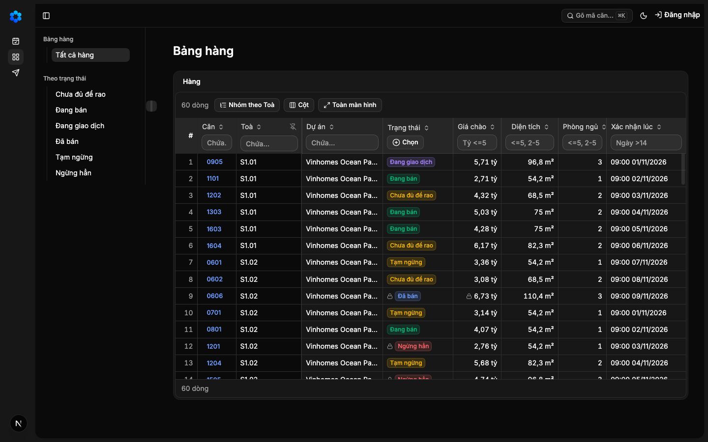
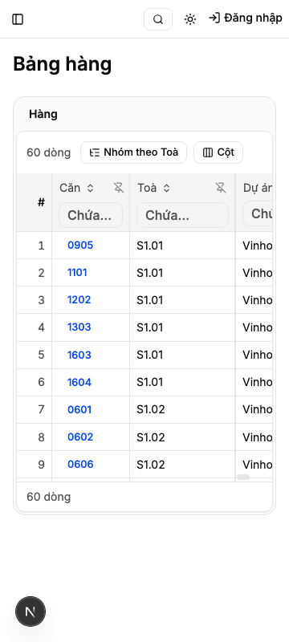


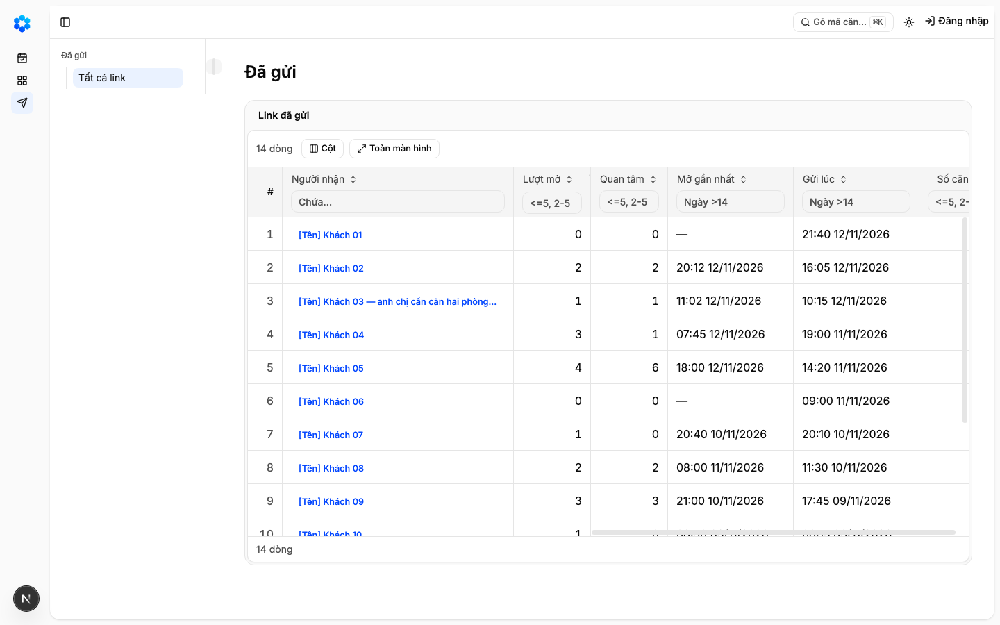


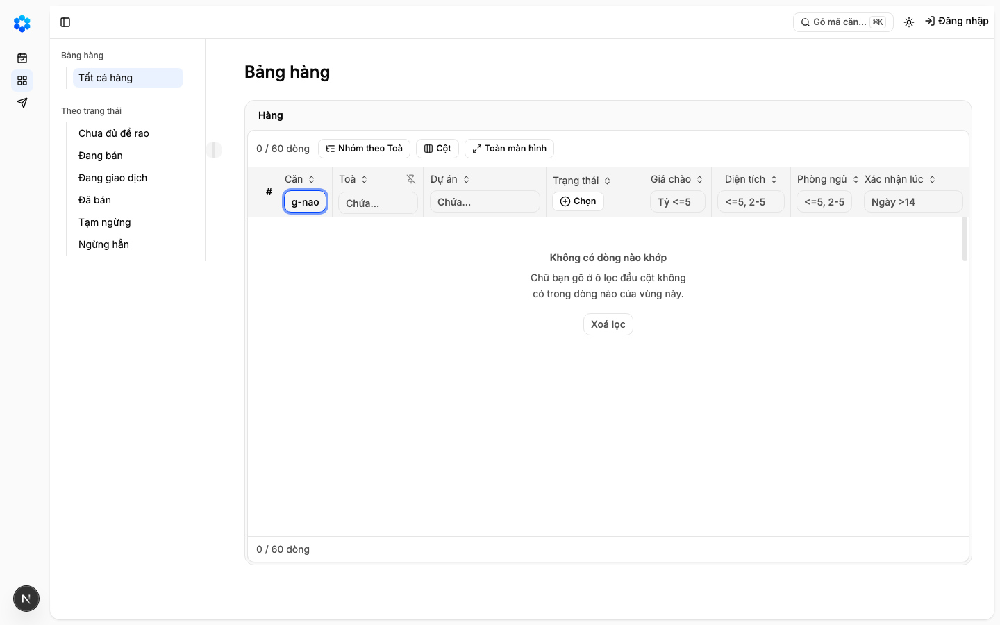
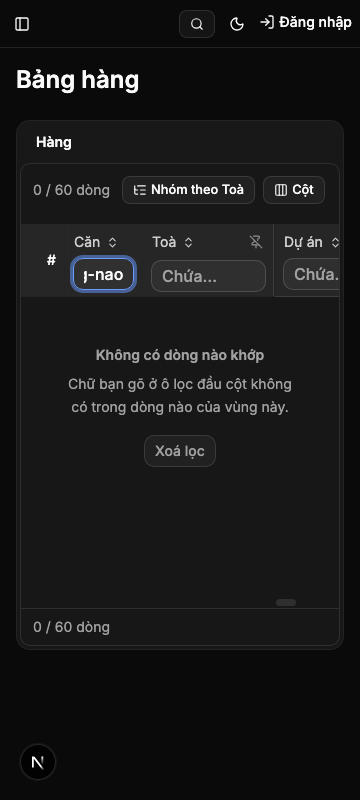
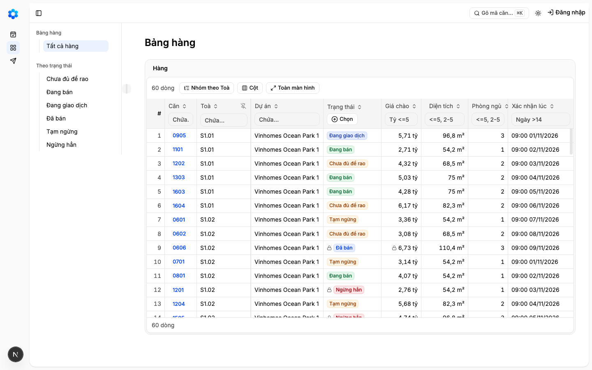
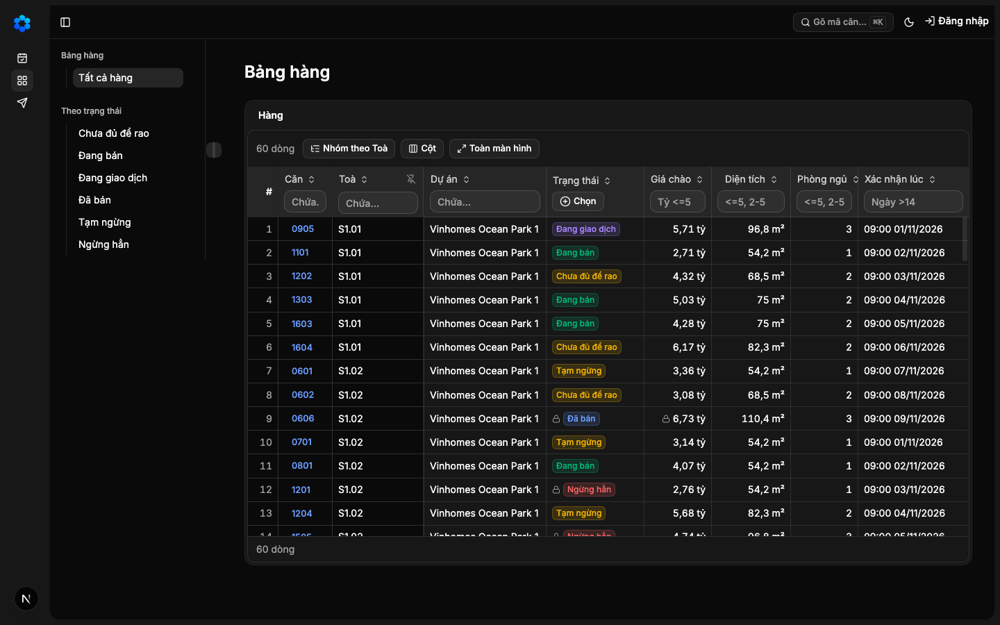
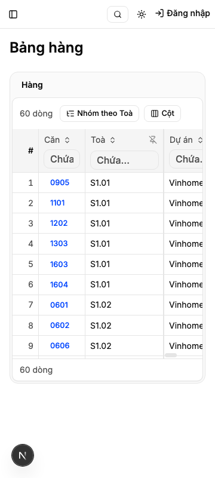
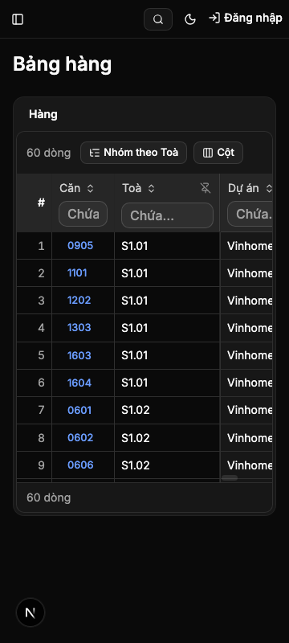

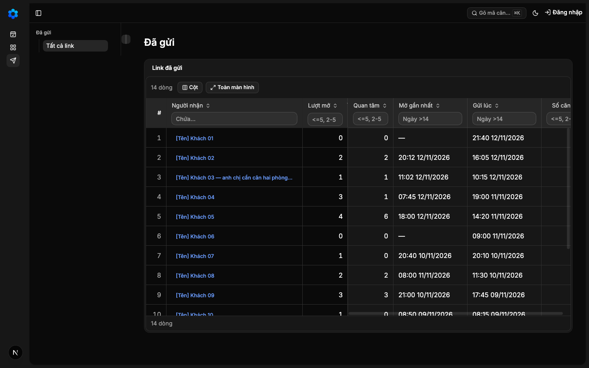
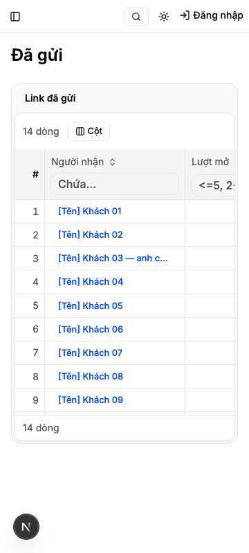
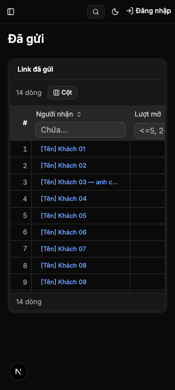
PASS (CARRY-FORWARD TỪ ROUND 1) E4 · script
AC-2: Given Bảng hàng 60 dòng mẫu, When người gõ một chuỗi vào ô lọc dưới tiêu đề «Căn» (chuỗi có dòng khớp ở cả trong
carry-forward tu round 1 — delta khong cham paths cua eval
PASS E5 · test
AC-2: Given Bảng hàng 60 dòng mẫu, When người gõ một chuỗi vào ô lọc dưới tiêu đề «Căn» (chuỗi có dòng khớp ở cả trong
make test xanh toàn bộ.
PASS E6 · test
AC-3: Given Bảng hàng đang lọc bằng ô đầu cột, When một ô lọc làm không còn dòng nào khớp, Then thân bảng hiện «Không có
make test xanh toàn bộ.
PASS E7 · test
AC-4: Given Bảng hàng và Đã gửi vừa mở, không lọc sẵn, When người nhìn vùng, Then hàng ô lọc dưới tiêu đề cột hiện sẵn ở
make test xanh toàn bộ.
PASS E8 · script
AC-5: Given Bảng hàng ở 360 và 414, When người cuộn ngang và gõ vào ô lọc của một cột, Then hàng ô lọc nằm dưới tiêu đề
1063 passed (9.2m)
PASS E9 · test
AC-6: Given một góc nhìn đã lưu của 2c, When người lưu, lưu thay đổi hay mở lại góc nhìn ấy — kể cả từ địa chỉ hay dữ liệu
make test xanh toàn bộ.
PASS E10 · script
AC-6: Given một góc nhìn đã lưu của 2c, When người lưu, lưu thay đổi hay mở lại góc nhìn ấy — kể cả từ địa chỉ hay dữ liệu
11 passed (1.4m)
PASS (CARRY-FORWARD TỪ ROUND 1) E11 · test
AC-7: Given ma trận trạng thái, bảng hành vi, khuôn Lưới, mô tả Góc nhìn trong mô hình nghiệp vụ và nhật ký, When người
carry-forward tu round 1 — delta khong cham paths cua eval
PASS (ĐỀ XUẤT CỦA HỘI ĐỒNG, CHỜ NGƯỜI CHỐT) E12 · judgment
AC-7: Given ma trận trạng thái, bảng hành vi, khuôn Lưới, mô tả Góc nhìn trong mô hình nghiệp vụ và nhật ký, When người
Phán đoán: Cả ba góc nhìn đều đối chiếu sáu điểm với tệp thật và thấy khớp. states.md hàng 9 gọi trạng thái là «Không có dòng nào khớp» và bắt buộc lối «Xoá lọc». luoi.md nói lọc ở ô dưới tiêu đề cột, tìm ở ô ⌘K của App Shell. SavedView.yaml chỉ nhắc chữ tìm để nói nó không được giữ. wiki/log.md và CHANGELOG.md ghi lời chốt 2026-11-13 và migration 011. behaviors.md không còn từ tìm, search hay ⌘K.
PASS (CARRY-FORWARD TỪ ROUND 1) E13 · script
AC-8: Given bộ bài kiểm sinh từ sổ màn, When nó chạy trên mọi màn họ Lưới có vùng (Bảng hàng, Đã gửi), Then ca «tìm» được
carry-forward tu round 1 — delta khong cham paths cua eval
PASS E14 · script
AC-9: Given mọi bài kiểm đơn vị và trình duyệt từng gõ vào ô tìm hay nhắc «Tìm không ra», When hàng này viết lại chúng,
CODEOWNERS matches governance/autonomy.yaml
PASS (ĐỀ XUẤT CỦA HỘI ĐỒNG, CHỜ NGƯỜI CHỐT) E15 · judgment
AC-9: Given mọi bài kiểm đơn vị và trình duyệt từng gõ vào ô tìm hay nhắc «Tìm không ra», When hàng này viết lại chúng,
Phán đoán: Các dòng bảng trỏ tới recipes.ts, grid.test.tsx, grid-sheet.test.tsx và grid-saved-view.test.tsx khớp ca thật, kèm ca phá được giữ hoặc thêm. Không dòng nào ghi xoá hay bỏ qua mà thiếu khẳng định thay. Lưu ý của hai góc nhìn: các dòng trỏ tới tệp ngoài danh sách đầu vào (e2e, behavior, ho-so-can, second-column-views, e2e-templates.test, goc-nhin) chỉ được đọc qua chữ của bảng, chưa đối chiếu với ca thật.
PASS (CARRY-FORWARD TỪ ROUND 1) E16 · test
AC-10: Given mục «khối có trước luật» của sổ khối, When công cụ chứng minh màn đọc từng cặp miễn, Then cặp chỉ được miễn
carry-forward tu round 1 — delta khong cham paths cua eval
PASS (CARRY-FORWARD TỪ ROUND 1) E17 · script
AC-7: Given ma trận trạng thái, bảng hành vi, khuôn Lưới, mô tả Góc nhìn trong mô hình nghiệp vụ và nhật ký, When người
carry-forward tu round 1 — delta khong cham paths cua eval
PASS E18 · script
AC-9: Given mọi bài kiểm đơn vị và trình duyệt từng gõ vào ô tìm hay nhắc «Tìm không ra», When hàng này viết lại chúng,
ca pha "tro toi dong khong phai ca": do — doi-bai-kiem: ca khong co: // @vitest-environment jsdom
PASS E19 · test
AC-11: (sửa sau Cổng Phạm vi — G-1311-37, Ngoài-6 của 3f chủ kho chọn «mở hợp đồng mới» 2026-11-13; chủ kho phê ở Cổng
make test xanh toàn bộ.
PASS E20 · script
AC-12: (sửa sau Cổng Phạm vi — phán quyết G K-1411-1, K-1411-2, K-1411-5, K-1411-7 ngày 2026-11-14; đổi một điều đã ký của
1063 passed (9.2m)
Eval không phân biệt (Analyst)
Vòng verify
- Round 1: E2, E8, E20 đỏ (make e2e không đạt); các eval còn lại xanh. Trả về bước thực thi.
- Round 2: sau commit 403118b (cột đầu luôn ghim bỏ nút Bỏ ghim ẩn, tám cột lại vừa) mọi eval máy xanh; E4, E11, E13, E16, E17 carry-forward từ round 1; E12 và E15 chờ người chốt.
Tài nguyên
| Khối | Tác tử | Token đầu ra |
|---|
0 lượt chấm · tổng 0 token
Giới hạn và ngoài hợp đồng
- Ô ⌘K ở thanh trên và việc nó điền sẵn ô lọc cột Căn: hàng 3f.
- Lọc cả bảng bằng một chữ ở bất kỳ chỗ nào khác trong vùng: không làm — trái lời chốt của chủ kho.
- Màn Liên hệ: chưa dựng.
- Đổi luật lọc của từng kiểu cột (chứa, khoảng, chọn nhiều) hay phím của Bảng hàng: giữ như hàng 2a và hàng 2.
- Ngoài-11, Ngoài-12, Ngoài-15 của 2c: chủ kho đã ghi hạn chế đã biết.
Giao
chưa ghi quan sát production
Giá trị
- Câu hỏi phép đo trả lời: [đề xuất] đã đạt «Lưới dùng chung không còn vẽ và không còn nhận ô tìm của vùng trên mọi màn họ Lưới, ở máy tính và điện thoại; trạng thái vùng «Tìm không ra» đổi tên thành «Không có dòng nào khớp» và vẫn có lối thoát «Xoá lọc»; ma trận trạng thái, bảng hành vi và khuôn Lưới ghi đúng như vậy; mọi bài kiểm đang gõ vào ô tìm được viết lại sang ô lọc dưới tiêu đề cột mà phép so không yếu đi; cách xem đã lưu của hàng 2c không mang chữ tìm; trên điện thoại vẫn còn hàng ô lọc dưới tiêu đề cột» chưa? — chưa đo
- Kết quả nào là SỐNG: [đề xuất] Lưới dùng chung không còn vẽ và không còn nhận ô tìm của vùng trên mọi màn họ Lưới, ở máy tính và điện thoại; trạng thái vùng «Tìm không ra» đổi tên thành «Không có dòng nào khớp» và vẫn có lối thoát «Xoá lọc»; ma trận trạng thái, bảng hành vi và khuôn Lưới ghi đúng như vậy; mọi bài kiểm đang gõ vào ô tìm được viết lại sang ô lọc dưới tiêu đề cột mà phép so không yếu đi; cách xem đã lưu của hàng 2c không mang chữ tìm; trên điện thoại vẫn còn hàng ô lọc dưới tiêu đề cột — chưa đo
- Kết quả nào là CHẾT: [đề xuất] chưa đạt «Lưới dùng chung không còn vẽ và không còn nhận ô tìm của vùng trên mọi màn họ Lưới, ở máy tính và điện thoại; trạng thái vùng «Tìm không ra» đổi tên thành «Không có dòng nào khớp» và vẫn có lối thoát «Xoá lọc»; ma trận trạng thái, bảng hành vi và khuôn Lưới ghi đúng như vậy; mọi bài kiểm đang gõ vào ô tìm được viết lại sang ô lọc dưới tiêu đề cột mà phép so không yếu đi; cách xem đã lưu của hàng 2c không mang chữ tìm; trên điện thoại vẫn còn hàng ô lọc dưới tiêu đề cột» khi hết timebox — chưa đo
- Timebox: … — chưa đo